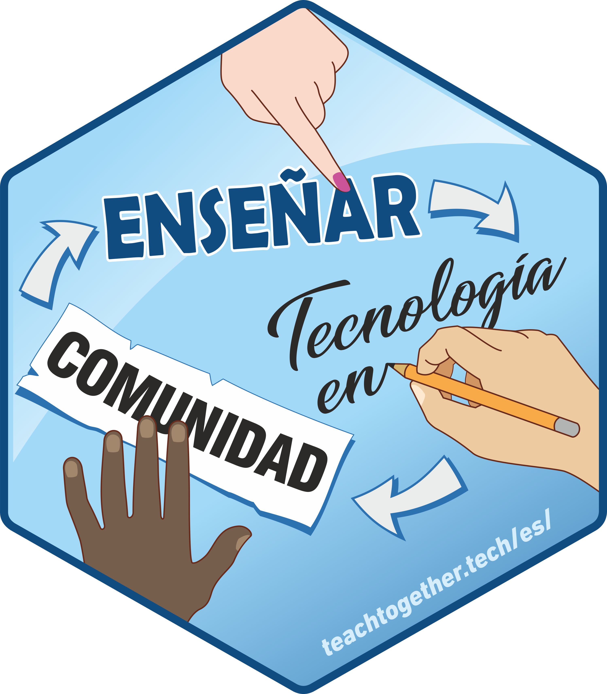

Enseñar Tecnología en Comunidad
Traducción colaborativa al castellano del libro “Teaching Tech Together. How to create and deliver lessons that work and build a teaching community around them" de Greg Wilson
By Silvia Canelón in Education Castellano
December 28, 2020
Enseñar Tecnología en Comunidad. Cómo crear lecciones que funcionen y construir una comunidad docente alrededor 
Este proyecto llevó acabo la traducción al castellano del libro Teaching Tech Together escrito por Greg Wilson. El proyecto fue coordinado por mi amiga y colega Yanina Bellini Saibene.
Yo participé como traductora del capítulo “Motivation and Demotivation” y revisora del capítulo “Expertise and Memory.”
Septiembre de 2020 – Diciembre de 2020. Traducción colaborativa al castellano del libro “Teaching Tech Together. How to create and deliver lessons that work and build a teaching community around them” de Greg Wilson (2019, Taylor & Francis, ISBN 978-0-367-35328-5, https://teachtogether.tech/). Coordinación general de la traducción: Yanina Bellini Saibene; Edición general: Yanina Bellini Saibene y Natalia Morandeira. Participación como traductora y revisora de capítulos. Más información y grupo de traductoras: https://github.com/gvwilson/teachtogether.tech/blob/master/es/README.md
- Posted on:
- December 28, 2020
- Length:
- 1 minute read, 131 words
- Categories:
- Education Castellano
- Tags:
- Education
- See Also: